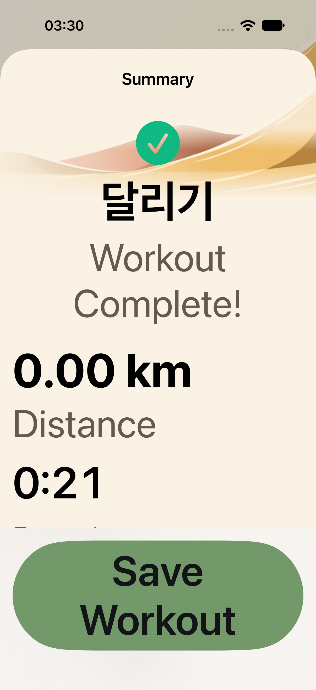
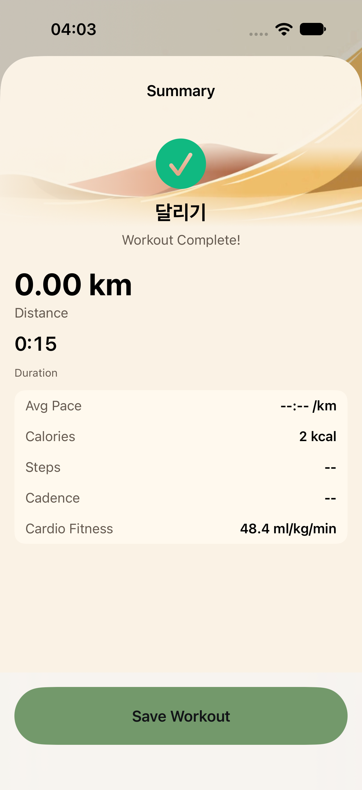
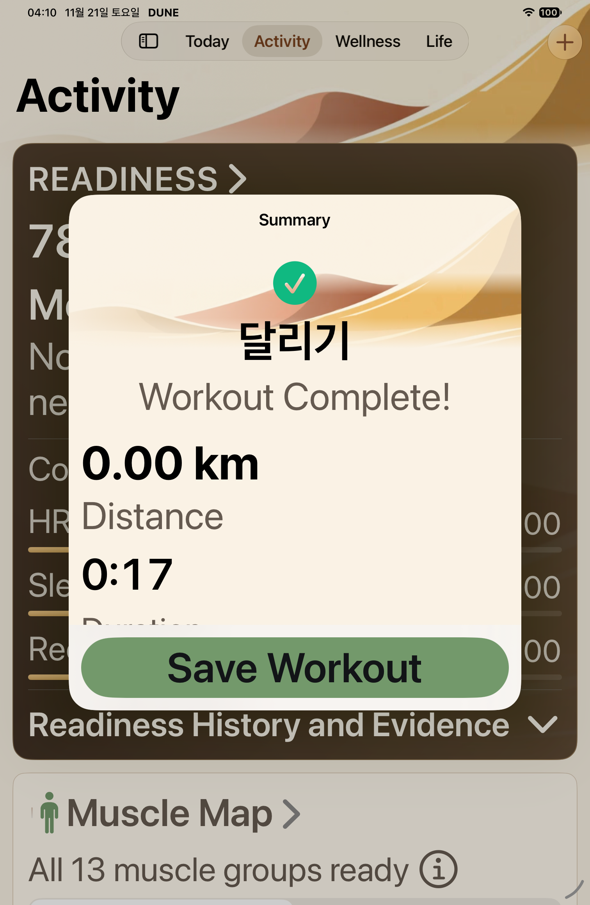
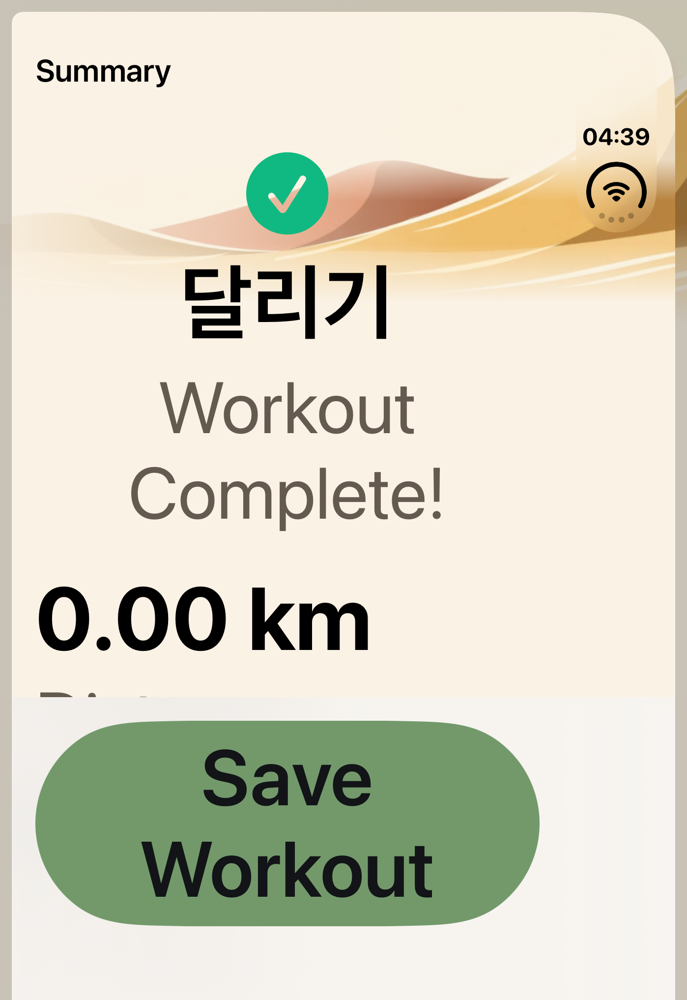
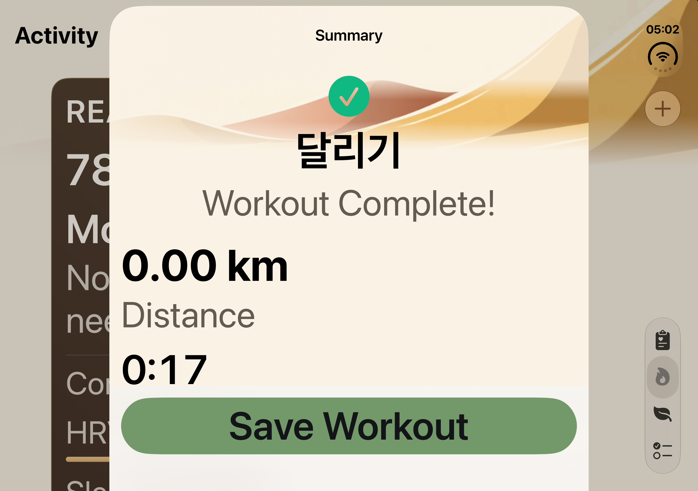

전체 디자인맵
R10 · W25
기능별 원격 소스와 최종 통합본을 파일 단위로 대조했다. 각 이미지를 통과한 개별 UI 테스트에 연결했다. Duo 내부 화면은 지정된 체크포인트에서 활성 LCD-1 프레임버퍼를 직접 캡처했다. 파일별 빌드·크기·관찰 결과는 아래 기록에 있다. source 41de4dfbcbb5265ae80d5b86f295842d965c992b; build 47781c2d49de3f1c1ea54aef44a457ea8bb99b20,9d56a10d504b9970029186331187604a962cf472,676e10da12b4cc957e8cb6eb516fbee14af5035f,7b077bad0e854e86f904ecefe839d25f208de766,0a266b6ad3dedb4b8cb2e990f9e27cb77a54a871.

regular · R10-screen · 1206×2622
기본 글씨에서 거리와 시간이 보조 지표보다 먼저 보인다. 최대 접근성 글씨에서 요약은 세로로 스크롤되고 저장 버튼이 하단에 보인다.

regular · R10-screen · 1206×2622
기본 글씨에서 거리와 시간이 보조 지표보다 먼저 보인다. 최대 접근성 글씨에서 요약은 세로로 스크롤되고 저장 버튼이 하단에 보인다.

ipad · R10-screen · 1512×2316
iPad W25 실제 PNG에서 달리기 완료 제목 다음에 거리 0.00 km가 가장 크고 시간 0:17이 두 번째로 보이며, 하단 Save Workout 버튼 전체가 시트 안에 있다. 보조 지표는 스크롤 아래에 있어 이 한 장으로 행 배치를 판정할 수 없다. 한글 종목명과 영어 완료 문구가 혼재하지만 이 캡처의 테스트 언어 설정은 별도 확인이 필요하다.

duo · R10-screen · 1398×2034
접힘·최대 글자 크기: 거리 0.00 km가 주 결과로 크게 보이고 저장 버튼도 화면 안에 온전히 표시된다. 다만 영문 완료 문구와 달리기 이름이 매우 커서 시간 및 보조 지표는 이 한 장에 보이지 않으며, 화면 안의 한국어·영어 혼용도 확인된다.

duo-open · R10-screen · 2853×2007
펼친 Duo의 최대 글자 크기에서 달리기 완료 시트에 거리 0.00 km와 시간 0:17이 세로로 표시되고 저장 버튼 전체가 보인다.미검증 기기: none by device. 미검증 화면: none by screen ID. 육안 검토: 원본 화면 검토 완료; 기본 글씨에서 거리와 시간이 보조 지표보다 먼저 보인다. 최대 접근성 글씨에서 요약은 세로로 스크롤되고 저장 버튼이 하단에 보인다. iPad W25 실제 PNG에서 달리기 완료 제목 다음에 거리 0.00 km가 가장 크고 시간 0:17이 두 번째로 보이며, 하단 Save Workout 버튼 전체가 시트 안에 있다. 보조 지표는 스크롤 아래에 있어 이 한 장으로 행 배치를 판정할 수 없다. 한글 종목명과 영어 완료 문구가 혼재하지만 이 캡처의 테스트 언어 설정은 별도 확인이 필요하다. 접힘·최대 글자 크기: 거리 0.00 km가 주 결과로 크게 보이고 저장 버튼도 화면 안에 온전히 표시된다. 다만 영문 완료 문구와 달리기 이름이 매우 커서 시간 및 보조 지표는 이 한 장에 보이지 않으며, 화면 안의 한국어·영어 혼용도 확인된다. 펼친 Duo의 최대 글자 크기에서 달리기 완료 시트에 거리 0.00 km와 시간 0:17이 세로로 표시되고 저장 버튼 전체가 보인다.; 기능별 캡처 검토.
원본 파일명·SHA-256·크기·테스트 출처